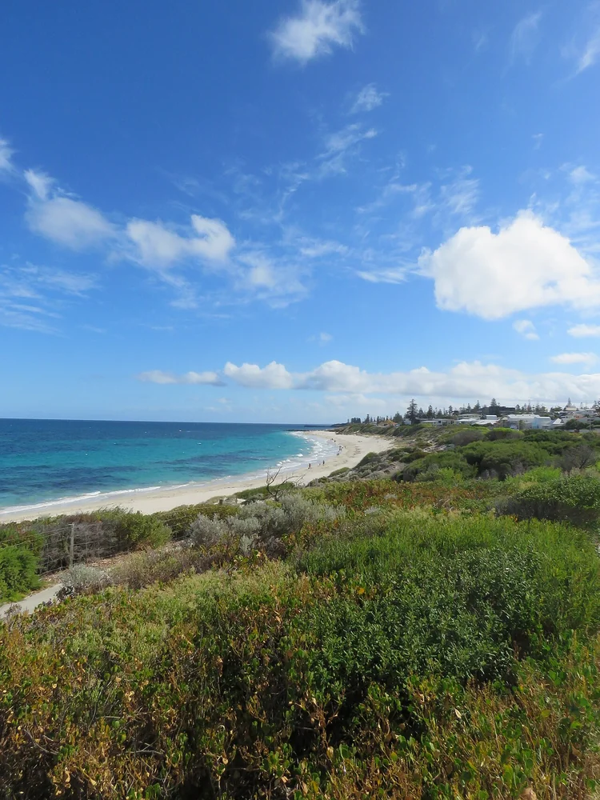

Cottesloe Beach
Perth, Australie · surf

La plage de Cottesloe fait partie de l’histoire du surf en Australie-Occidentale. Le front de mer regarde l’océan Indien.
- Lieu
- Perth, Australie
- Niveau
- Variable selon les conditions
- Activités
- surf
- Type d'eau
- Mer / océan
- Coordonnées
- -31.99, 115.75 (position approximative du secteur)
Ouvrir dans Ocean Buddy Télécharger sur l'App Store
Source : Tourism Australia.